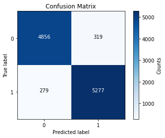
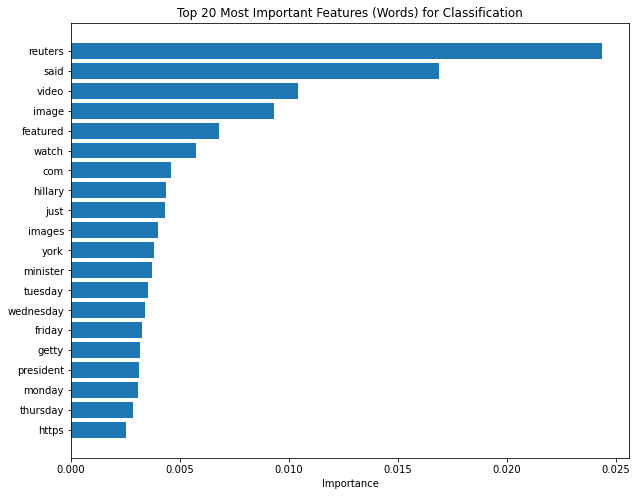
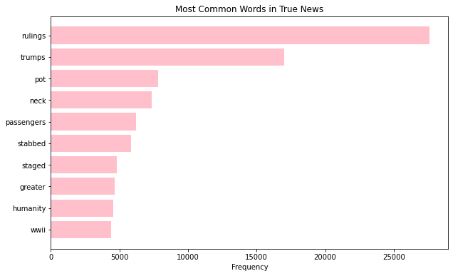
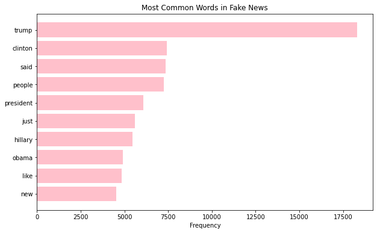

This last spring semester I took ‘Security and Privacy’ offered by Vasanta Chaganti (a wonderful professor). We covered buffer overflows, SQL injections, XSS and CSRF attacks and many other different aspects of computer security.
One of the fundamental problems with computer security, though, is that the biggest problem with securing information and hardware is not increasingly complicated hacks that penetrate seemingly perfect cryptographic schemes—-it’s users not being careful. For example, people have worried a lot about the security of voting machines–rightfully so–but it’s just as much a problem to defend social media and other forms of media propagation from general misinformation and more malicious disinformation attacks. It’s irrelevant how secure the ballots are if people are being manipulated to vote differently than they otherwise might.
When thinking about these alternate security concerns, while my classmates were working on hacking old versions of Windows or trying to create keyloggers, I decided to work on misinformation detection using some natural language processing techniques on a corpus of different news articles with my friend Rushil.
We began our project using the ‘WELFake’ dataset, which combines articles from Kaggle, McIntire, Reuters, and BuzzFeed Politics and includes over 72 thousand articles. The data is structured with a unique ID, a boolean value for the truthfulness, the title of the article, and the text of the article. My first action was to create another column in the table to combine the titles to the articles, just so there was one main column that included all of the possible information about the article for the training data.
Then, we split off the labels for testing, and used scikit-learns CountVectorizer function (which is great, by the way). This essentially creates a table of all of the words seen throughout every single article, and then counts the number of times those words appear in each article. The function also removes all stop words while it goes through the count vectorization process which saves time and effort which is really nice.
Our first thought was to use a support vector machine, SVMs are great for dealing with vectors! But then, I realized that we could just use a random forest which will train faster (especially for a dataset the size of WELFake) and will have comparable accuracy, if not better.
When dealing with a random forest, there aren’t too many important things to think about when actually implementing. You just need to choose your splitting criterion between information entropy, Gini impurity, etc. and the number of trees. I decided to go with the default (gini) and then looped through between 10 and 200 trees to see which forest was best at predicting fake news.
With 75 trees in our forest we had 94% accuracy! This was much better than we expected, but we still had to make a confusion matrix to look at how well we were classifying fake news vs real news.

The confusion matrix above shows that we seem to be doing a pretty balanced job. However, scikit-learn has a default attribute of its random forest objects that lets you see the most important features for prediction, and when we listed the most useful features we created the following plot.

This plot, while mostly useless–showing that a lot of really small, stupid words did not get erased using CountVectorizer–shows that Reuters is listed as the most useful word. This is unsurprising because Reuters is a news organization that is known for being extremely reliable! So this word existing in the data almost made it too easy to classify. Now, this does teach an important lesson. Your news will be more reliable if you get it from sources that are known for being reliable and if you are reading news elsewhere, if they reference an outlet–like Reuters–that you know is reliable, than you are in a good place a lot of the time.


The following plots show the most common words in both real news and fake news articles. This also illustrates a danger in looking for singular words or topics to try and find the truthfulness of news. The truth about news is that everyone is telling the same stories about the same events! The only difference is how different outlets or people spin the stories and events toward their points of view and if they do it in a malicious way. When this data was being collected, Donald Trump was president…of course Donald Trump’s will be one of the most commonly referenced words in both real and fake news. He is the biggest figure in the western world, so both well-meaning and malicious people will be discussing him and things he is doing. The same logic applies to all sorts of prominent people and topics.
Although we realized that finding categories that are prominent in both real and fake news wasn’t the most helpful route for humans to differentiate, because everything looks so similar, I decided I wanted to try using Latent Dirichlet Allocation (LDA), a natural language processing algorithm that helps define important topics in a text. It defines these topics by a cluster of words that belong together in some way. This uses an algorithm not entirely dissimilar to expectation maximization using the dirichlet distribution and bayesian probability.
Unsurprisingly, the ‘top’ topic for fake news was defined by the words: ‘trump, donald, president, just, said, people, twitter, hillary, like, video’ and the list of words that define the top topic for real news was ‘trumps, rulings, remain, colony, humanity, pot, careful, remained, sectors, stabbed.’
I listed three topics for both fake news and real news, but to be honest, they were not a very interesting result. They were all fairly similar and, at times, outlandish. It’s a good reminder that ML algorithms can do a really good job of categorizing things to us, but the way they do it is not intuitive for humans at all. Similarly to how chess bots are now orders of magnitude better than human chess players, but the bots don’t really follow the heuristics and conventions that humans have been using and building on for over a thousand years.
Even though the results from the LDA were not exactly what I wanted them to be above, I thought of a better idea almost immediately after. Our model is pretty good at filtering away fake news, but what topics get miscategorized the most? So I filtered out all of the points that the model correctly categorized and then ran LDA on the subset of the data that remained. One cluster was made of ‘said, obama, new, iran, military, states, deal, nuclear, president, time’ and another was made of ‘trump, russian, said, new, people, like, president, media, year, time,’ and ‘trump, clinton, said, president, people, obama, campaign, donald, new, party.’ The one with Trump and Clinton is unsurprising because of how much information and misinformation there was on the internet at the time of the 2016 election. But the other categories are interesting to me. There was a lot of interest and speculation about Russia running a misinformation campaign in the US during the 2016 election and there has always been some tension with Iran, which means that these could be really important categories to predict correctly!
My takeaways from this in particular, are that pretty basic models like our random forest are overall pretty good at determining what is real and what is fake, but when there are complicated elements involving potential disinformation attacks with information that is crafted to be difficult to gauge the truth of the model might not function as well as it does in the aggregate.
Overall I would consider the model a success and I feel that I learned a lot, but there are definitely some things to think about with regards to how we take in information being careful about sources and fact checking.